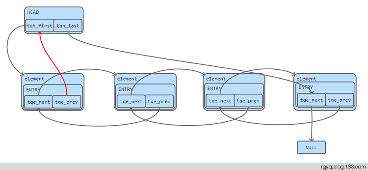

queue.h之尾队列
之前看librdkafka和libevhtp的源码，发现其中大量使用queue.h定义的队列操作宏，于是学习了其中的尾队列，对应的系统版本是
[root@datanode1 src]# cat /etc/redhat-release
CentOS release 5.10 (Final)
尾队好处是列增了一个指向上一个元素的指针，使得其在删除元素的时候不必遍历整个链表，同时支持反向遍历。
头：
#define _TAILQ_HEAD(name, type, qual)
struct name {
qual type *tqh_first; /* 指向第一个元素 */
qual type *qual *tqh_last; /* 指向最后一个元素的next指针 */
}
#define TAILQ_HEAD(name, type) _TAILQ_HEAD(name, struct type,)
下文中用HEAD表示
域：
#define _TAILQ_ENTRY(type, qual)
struct {
qual type *tqe_next; /* 指向下一个元素 */
qual type *qual *tqe_prev; /* 指向上一个元素的next指针 */
}
#define TAILQ_ENTRY(type) _TAILQ_ENTRY(struct type,)
下文中用ENTRY表示
这四个指针之间的关系是这样的——
tqh_first指向头元素。当队列为空时，头元素就是HEAD，tqh_first相当于tqe_nexttqh_last指向尾元素的tqe_next指针，下文中简称为指向尾元素，所以是二级指针。当队列为空时，尾元素就是HEAD，它没有tqe_next指针，所以代之以tqh_first指针tqe_next指向下一个元素tqe_prev指向上一个元素的tqe_next指针，下文中简称为指向上一个元素，所以是二级指针。不过，头元素的上一个元素是HEAD，它没有tqe_next指针，所以代之以tqh_first指针
说了这么多，一图以蔽之：

这里与查阅的参考文献（C语言之尾队列tailq）有一个区别，那就是头元素的
tqe_prev指针是指向了HEAD的tqh_first，而非NULL。因为在宏TAILQ_INSERT_HEAD中，代码行(elm)->field.tqe_prev = &(head)->tqh_first清晰的说明了元素elm的tqe_prev指针指向了HEAD的tqh_first指针。
初始化：
#define TAILQ_INIT(head) do {
//头元素为NULL
(head)->tqh_first = NULL;
//尾元素是HEAD
(head)->tqh_last = &(head)->tqh_first;
} while (/*CONSTCOND*/0)
在头部添加元素：
#define TAILQ_INSERT_HEAD(head, elm, field) do {
//elm指向下一个元素，即头元素。判断当前队列是否为空
if (((elm)->field.tqe_next = (head)->tqh_first) != NULL)
//非空，当前头元素指向上一个元素elm
(head)->tqh_first->field.tqe_prev =
&(elm)->field.tqe_next;
else
//为空，elm变成尾元素，于是指向尾元素
(head)->tqh_last = &(elm)->field.tqe_next;
//elm变成头元素，于是指向头元素
(head)->tqh_first = (elm);
//elm指向上一个元素，这里时HEAD
(elm)->field.tqe_prev = &(head)->tqh_first;
} while (/*CONSTCOND*/0)
在尾部添加元素
#define TAILQ_INSERT_TAIL(head, elm, field) do {
//elm的指向下一个元素NULL
(elm)->field.tqe_next = NULL;
//elm的指向上一个元素，即当前尾元素
(elm)->field.tqe_prev = (head)->tqh_last;
//当前尾元素指向下一个元素elm
*(head)->tqh_last = (elm);
//elm变成尾元素，于是指向尾元素
(head)->tqh_last = &(elm)->field.tqe_next;
} while (/*CONSTCOND*/0)
在指定元素后面添加元素
#define TAILQ_INSERT_AFTER(head, listelm, elm, field) do {
//elm指向listelm指向的下一个元素，并判断listelm是否是尾元素
if (((elm)->field.tqe_next = (listelm)->field.tqe_next) != NULL)
//不是，elm的下一个元素指向上一个元素elm
(elm)->field.tqe_next->field.tqe_prev =
&(elm)->field.tqe_next;
else
//是，elm变成尾元素，于是指向尾元素
(head)->tqh_last = &(elm)->field.tqe_next;
//listelm指向下一个元素elm
(listelm)->field.tqe_next = (elm);
//elm指向上一个元素listelm
(elm)->field.tqe_prev = &(listelm)->field.tqe_next;
} while (/*CONSTCOND*/0)
这跟
TAILQ_INSERT_HEAD非常像，都需要判断下一个元素是否是NULL，据此决定更新是尾元素，还是下一个元素
在指定元素前面添加元素
#define TAILQ_INSERT_BEFORE(listelm, elm, field) do {
//elm指向listelm指向的上一个元素
(elm)->field.tqe_prev = (listelm)->field.tqe_prev;
//elm指向下一个元素listelm
(elm)->field.tqe_next = (listelm);
//listelm的上一个元素指向下一个元素elm
*(listelm)->field.tqe_prev = (elm);
//listelm指向上一个元素elm
(listelm)->field.tqe_prev = &(elm)->field.tqe_next;
} while (/*CONSTCOND*/0)
移除元素
#define TAILQ_REMOVE(head, elm, field) do {
//判断elm是否是尾元素
if (((elm)->field.tqe_next) != NULL)
//不是，elm的下一个元素指向上一个元素，即elm指向的上一个元素
(elm)->field.tqe_next->field.tqe_prev =
(elm)->field.tqe_prev;
else
//是，elm的上一个元素变成尾元素，更新尾元素
(head)->tqh_last = (elm)->field.tqe_prev;
//elm的上一个元素指向下一个元素，即elm的下一个元素
*(elm)->field.tqe_prev = (elm)->field.tqe_next;
} while (/*CONSTCOND*/0)
正向遍历
#define TAILQ_FOREACH(var, head, field)
//获取头元素，判断是否有下一个元素
for ((var) = ((head)->tqh_first);
(var);
(var) = ((var)->field.tqe_next))
反向遍历
#define TAILQ_FOREACH_REVERSE(var, head, headname, field)
//获取尾元素，判断是否有上一个元素
for ((var) = (*(((struct headname *)((head)->tqh_last))->tqh_last));
(var);
(var) = (*(((struct headname *)((var)->field.tqe_prev))->tqh_last)))
第一次看到这段代码的时，一头雾水，tqh_last后面又跟着一个tqh_last，what？反反复复看了几遍，渐渐就明白了——先看下HEAD和ENTRY的定义，不难发现它们在内存结构上是一样的。我们知道tqh_last是指向尾元素的tqe_next，强制转换后变成HEAD类型，第二个tqh_last实际上就是尾元素的tqe_prev指针，该指针中存放的是上一个元素tqe_next指针的地址，反引用后就成了尾元素的地址。
struct name {
qual type *tqh_first; /* 指向第一个元素 */
qual type *qual *tqh_last; /* 指向最后一个元素的next指针 */
}
struct {
qual type *tqe_next; /* 指向下一个元素 */
qual type *qual *tqe_prev; /* 指向上一个元素的next指针 */
}
考虑一下反向遍历到最后一个元素，即头元素的时候，循环是如何终止的。此时var指向头元素，tqe_prev指向HEAD的tqh_first指针，如果指向NULL，那么就会出现NULL->thq_last。强制转换后，访问HEAD的tqh_last指针，该指针指向尾元素的tqe_next，我们知道尾元素作为最后一个元素指向NULL，反引用后就是NULL，循环终止。